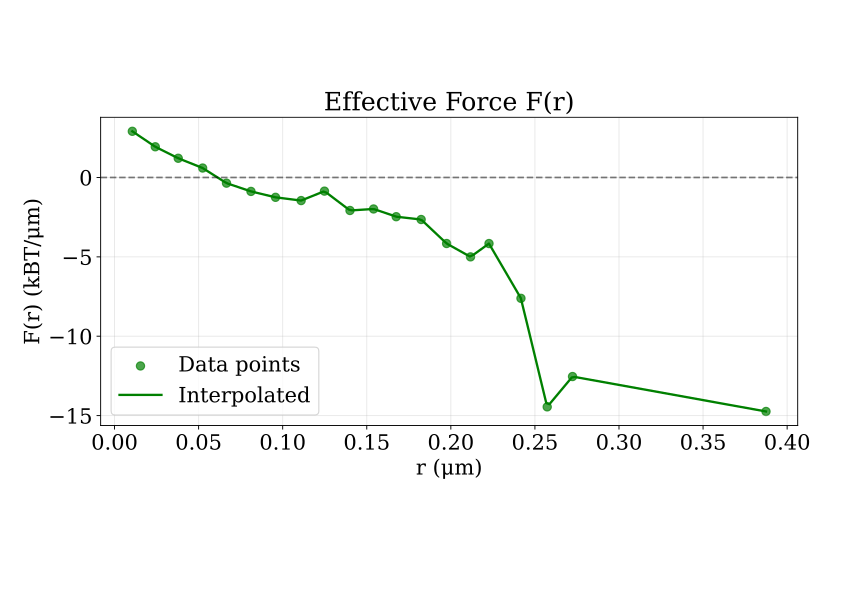

Single Particle Tracking – DNA Repair Condensates

Exploring molecular dynamics within phase-separated repair domains.
Presented by: Adrien Berard
Supervised by Judith Miné-Hattab and Asaki Lejars
Outline
-
A – Introduction
- A1 – Condensates & Phase Separation
- A2 – DNA Repair Foci Components
-
B – Results
- B1 – Macroscopic/full nucleus scale: Recruitment Dynamics in Human Cells
- B2 – Mesoscopic/condensate scale
- B3 – Microscopic scale: Single Particle Tracking (SPT)
-
C – Theory
- C1 – MSD & Diffusion Models
- C2 – Condensates driving forces
- D – Conclusions & Take‑aways
A. Introduction
- Condensates: Membraneless organelles formed via phase separation
- DNA repair foci: Concentrated protein domains repairing DNA damages with p53, 53BP1, FUS, PARP1,...
- Role: Organize and enhance repair machinery
Illustration by Olga Markova.
A. Introduction – Dynamics & Imaging
SPT Methodology
- Labeling: Endogenous or transient fluorescent tags
- Sparse expression: Isolate single molecules
- Fast imaging: 100 Hz acquisition
- Sub-pixel localization & tracking: via FreeTrace from Junwoo Park
SPT Methodology
.jpg)
Single particle tracking setup from Manley et al. 2008
B. Results – Different spatio-temporal resolutions
- Macroscopic: Recruitment curve for kinetics
- Mesoscopic: Condensates density map
- Microscopic: Single Particle Tracking (SPT)
Macro: p53 GFP Recruitment Dynamics
Time-lapse analysis of p53-GFP recruitment to DNA damage site (video, left) with recruitment curve (right).
Meso and micro: Cell Density Evolution

IR-induced p53 density changes in nucleus over time
B. Results – Key Findings Summary
- 53BP1: Slower recruitment, higher residence time
- p53: Faster recruitment, dynamic partitioning
- Condensate heterogeneity: Spatial and temporal variations
- Thermodynamic driving forces: Quantified energy landscapes
C. Theory & Analysis
Diffusion Model
- n: dimensions
- D: Diffusion coefficient
- α: Diffusion type (super-/normal/sub-)
Partitioning Thermodynamics
\[ \Delta G = -k_B T \ln\left(\frac{k_{\text{in}}}{k_{\text{out}}}\right) \]
- ΔG: Free energy driving partitioning
- kin / kout: Entry/leaving shell or condensate rates
Thermodynamic Analysis

Free energy changes (ΔG) driving protein partitioning
Radial displacement analysis

Radial displacement in function of the radius at the center of mass either in the condensate or outside. From 53BP1 data. Analysis idea from Miné-Hattab, Heltberg et al. 2021
Effective Force Analysis
Effective force within repair condensates
$$ \nabla U(\mathbf{r}) = -\mathbf{F}(\mathbf{r}) = \frac{f(\mathbf{r})}{\Delta t} \, \gamma = \frac{k_B T}{D} \frac{f(\mathbf{r})}{\Delta t} $$
Mean Diffusive Residence Time
\[ \tau = \frac{l^2}{2nD} \]
- τ: Mean residence time
- l2: Squared condensate diameter
- n: dimensions
- D: Diffusion coefficient
Mean Diffusive Residence Time

Mean residence time if one only accounts for diffusion
D. Conclusions & Take‑aways
p53 Dynamics
- Rapid recruitment to DNA damage sites (peak ~ s)
- Spatially homogeneous recruitment—distinct from FUS or 53BP1
- Sustained elevation post-recruitment—suggests role in later oscillations
D. Conclusions & Take‑aways
53BP1 Condensates
- First SPT visualization at single-molecule scale post-damage
- Higher density & reduced diffusion inside condensates
- Attractive forces inferred within condensates (~50 nm range)
- Estimated thermodynamic parameters: Gibbs free energy, residence time
D. Conclusions & Take‑aways
Methods & Tools
- Endogenous p53-Halo line validated by WB, selected from 12 lines
- SPT pipeline established to characterize physical properties of condensates
- Analysis methods & scripts developed for extracting diffusion and thermodynamics
D. Conclusions & Take‑aways
Broader Impact
- Applications to cancer research: mutant p53, condensate modulators
- Cross-disciplinary relevance: pipeline transferable to other condensates
- Integrative framework: simulation (PhD), theory, and experimental SPT
D. Conclusions & Take‑aways
Deliverables and Perspectives
- Experimental deliverables: RPE1 endogeneous tagged tested cell lines and p53-GFP plasmid
- Softwares produced: All codes are freely accessible on GitHub Adrien-Berard
- Theoretical perspectives: Active matter study, out-of-equilibrium thermodynamics, field theory on density
Thank You
And a huge thanks to Judith and the FIONA team!
Questions?
Supplementary Information
- FreeTrace: Custom Python tracking tool by Junwoo Park
- Fluorophores: p53-GFP, Halo/PA-JF
- Analysis environment: Python, Fiji
- Biological model: RPE1 and U2OS cells, damaged with laser irradiation
Detailed code and full datasets available upon request
Western Blot p53-Halo

Heterozygous confirmation via WB
Electrophoresis plasmid
Plasmid size confirmation via electrophoresis
Data summary for Inside: Total data points: 2975 r range: 0.00 to 0.42 μm Δr range: -0.22 to 0.34 μm Mean Δr: 0.000 ± 0.039 μm Repelled motion (Δr > 0): 1518 points (51.0%) Attracted motion (Δr < 0): 1453 points (48.8%) Data summary for Outside: Total data points: 63461 r range: 0.00 to 20.01 μm Δr range: -0.49 to 0.49 μm Mean Δr: 0.000 ± 0.042 μm Repelled motion (Δr > 0): 8648 points (13.6%) Attracted motion (Δr < 0): 8526 points (13.4%)